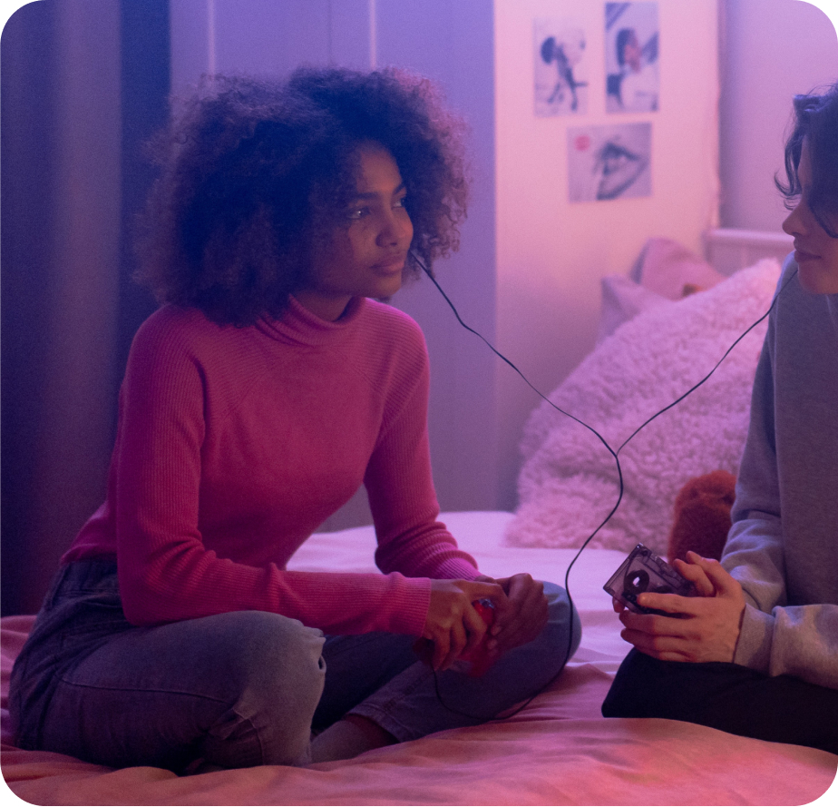

Personas
(Milestone 3)
Developing Personas
Together, team members followed the process outlined by Alan Cooper for developing personas. From our affinity diagram produced in milestone two, participants were mapped along axes representing core functionality, desires, and dislikes. We were able to discern primary and secondary personas we believe represent the population we are designing for, as well as an anti-persona to help prevent us from getting lost in details about people outside the target user base.
Personas

Alexandra Jones
(Primary Persona)
- Age
- 20.
- Location
- Rochester, NY.
- Occupation
- Student, 3rd year psychology major;
Barista, part-time on-campus job. - Devices
- iPhone, laptop, vinyl record player.
- Social Media
- Twitter and Instagram.
- Likes
- Extensive library selection with Indie, folk, and retro music.
- Dislikes
- Advertisements and lack of representation on music apps.
- Goals
- Alexandra is a melophile. That is, she absolutely loves music and discovering songs that fit her unique tastes. Because her musical preferences tend to be more niche, it can be hard for her to meet other people who enjoy the same musicians. She believes “music bonds people” and wants to experience new music or old favorites simultaneously with those she cares about, whether together in the same room or 3,000 miles apart.
- Scenario
- After getting back to her apartment from her on-campus job at the coffee shop, Alexandra wants to share a new song that she heard on the indie radio station while at work. She hops onto a web application on her latop and invites friends to join a “studio” room. In this space, she and her friends can simultaneously search for, add, and listen to songs together— including the new one she is eager to share. She makes the room publicly viewable so that anyone can join if they are interested, which will allow her to meet new people.
Caroline Baker
(Secondary Persona)
- Age
- 18.
- Location
- Cleveland, OH.
- Occupation
- Student, 1st year biology major.
- Devices
- iPhone, laptop.
- Social Media
- Instagram, Facebook, TikTok.
- Likes
- Popular music genres, keeping up with friends.
- Dislikes
- Being away from loved ones, high subscription costs.
- Goals
- In between classes in her packed schedule, Caroline loves to listen to popular music. She enjoys finding newly released songs from her favorite pop artists. Caroline shares similar music tastes with a large population, and often finds herself connecting with new people over music she’s heard recently. Due to her busy lifestyle, she enjoys sharing and receiving song suggestions from friends on her own time.
- Scenario
- After recently leaving her hometown to attend her first year of college, Caroline misses her little brother, Liam, back home. Her busy schedule makes it difficult for them to find time when they are both free to chat. On her walk back to her dorm after class, she starts listening to music on her iPhone. After hearing a song that reminds her of Liam, she opens the application’s messaging system to share it with him along with a note expressing that she can’t wait to visit soon.
Eric Mendoza
(Anti/Negative Persona)
- Age
- 22.
- Location
- Boston, MA.
- Occupation
- Entry-level programmer;
Part-time master's student. - Devices
- Galaxy S21.
- Social Media
- Facebook.
- Likes
- Listening to music for alone time and relaxation.
- Dislikes
- Social media.
- Goals
- Alexandra is a melophile. That is, she absolutely loves music and discovering songs that fit her unique tastes. Because her musical preferences tend to be more niche, it can be hard for her to meet other people who enjoy the same musicians. She believes “music bonds people” and wants to experience new music or old favorites simultaneously with those she cares about, whether together in the same room or 3,000 miles apart.
- Scenario
- After getting back to her apartment from her on-campus job at the coffee shop, Alexandra wants to share a new song that she heard on the indie radio station while at work. She hops onto a web application on her latop and invites friends to join a “studio” room. In this space, she and her friends can simultaneously search for, add, and listen to songs together— including the new one she is eager to share. She makes the room publicly viewable so that new people can join if they are interested.